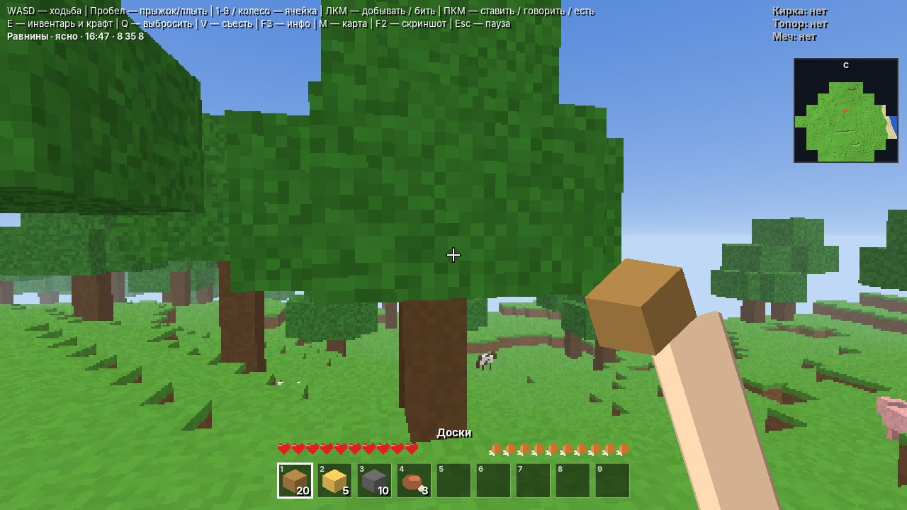
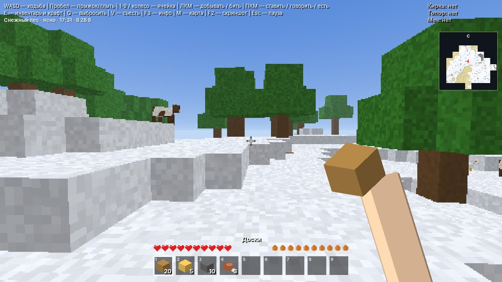
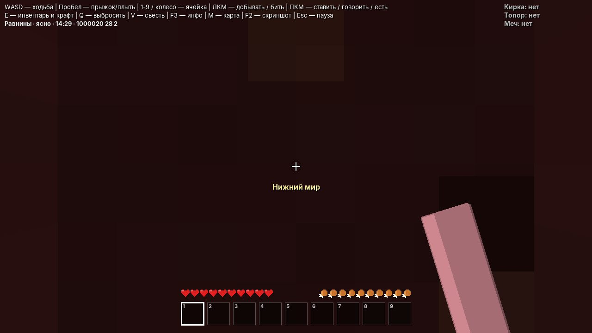

ТЕКУЩАЯ ВЕРСИЯ
1.10.0MiniCraft 1.10.0
Актуальная версия игры. Здесь можно публиковать список изменений нового обновления.

Голод, сердца, крафт, печки, сундуки, ферма, кровать и смена дня и ночи.
Портал из обсидиана и огниво. Магма, адский камень и светокамень на потолке.
Один открывает мир, друзья заходят по IP. Вещи друга сохраняются после выхода.
Бетон, терракота, кварц, паркет, двери, люки, стекло, лампы и ещё 20 декоративных блоков.
Мечи, броня, критические удары в прыжке, PvP между игроками и TNT с цепной реакцией.
Свой скин из PNG, аккаунты с ником, 11 достижений и мини-карта.
Актуальная версия игры. Здесь можно публиковать список изменений нового обновления.
Добавляйте сюда анонсы, исправления ошибок и планы следующих обновлений.



В меню выберите «Сетевая игра» и откройте свой мир. Друзья подключаются по IP.
Порт 25570 (TCP). Для игры через интернет может потребоваться настройка роутера. У всех игроков должна быть одна версия игры.

Пример скина

Твой персонаж

Другой образ
Для запуска требуется Java 8 или новее.
Откройте мир для сети и передайте другу IP-адрес и порт подключения.
В игре можно использовать собственный скин в формате PNG.
MiniCraft — независимый проект, не связанный с Mojang или Microsoft.
| Клавиша | Действие |
|---|---|
| WASD | Ходьба, Shift — бег |
| Space | Прыжок, плавание |
| LMB / RMB | Ломать и бить / ставить, открывать, есть |
| E | Инвентарь и крафт |
| 1–9 | Ячейки панели |
| Q | Выбросить предмет |
| J | Достижения |
| M | Мини-карта |
| F11 / F2 | Полный экран / скриншот |
Для онлайн-аккаунтов настрой Supabase в supabase-config.js.